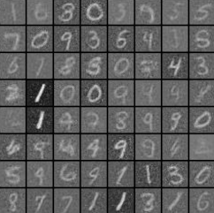
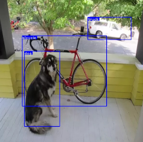

We are the tiny corp
Do you find yourself millions of dollars in the hole building an AI accelerator chip? Jumped the gun and built hardware before you had the software ready? Have a SoC with a hard to use Neural Network SDK (Qualcomm, Rockchip)? Just wish your accelerator was faster (NVIDIA, Google)?
The tiny corp can help! We can port our framework to any accelerator. We write and maintain tinygrad, the fastest growing neural network framework (almost 9000 GitHub stars)! tinygrad is extremely simple, and breaks down the most complex networks into 4 OpTypes:
- UnaryOps, operate on one tensor and run elementwise (RELU, LOG, RECIPROCAL, etc.),
- BinaryOps, operate on two tensors and run elementwise to return one (ADD, MUL, etc.),
- ReduceOps, operate on one tensor and return a smaller tensor (SUM, MAX etc.) and also
- MovementOps, operate on one tensor and move the data around, copy-free with the ShapeTracker (RESHAPE, PERMUTE, EXPAND, etc.).
But how? Where are your CONVs and MATMULs? Read the code to solve this mystery!
Introduction to tinygrad



This may not be the best deep learning framework, but it is a deep learning framework! For something in between pytorch and karpathy/micrograd. tinygrad will always be below 1000 lines. If it isn’t, we will revert commits until it becomes smaller. Due to its extreme simplicity, it aims to be the easiest framework to add new accelerators to, with support for both inference and training.
Get started with tinygrad
In order to install tinygrad run the following:
git clone https://github.com/geohot/tinygrad.git
cd tinygrad
python3 setup.py developExample:
from tinygrad.tensor import Tensor
x = Tensor.eye(3, requires_grad=True)
y = Tensor([[2.0,0,-2.0]], requires_grad=True)
z = y.matmul(x).sum()
z.backward()
print(x.grad) # dz/dx
print(y.grad) # dz/dySame example in PyTorch:
import torch
x = torch.eye(3, requires_grad=True)
y = torch.tensor([[2.0,0,-2.0]], requires_grad=True)
z = y.matmul(x).sum()
z.backward()
print(x.grad) # dz/dx
print(y.grad) # dz/dyFrequently asked questions
Is tinygrad used anywhere?
tinygrad is used in openpilot to run the driving model on the Snapdragon 845 GPU. It replaces SNPE. tinygrad is faster, supports loading ONNX files, supports training, and allows for attention (SNPE only allows fixed weights).
Is tinygrad inference only?
No! tinygrad supports full forward and backward passes with autodiff. This is implemented at a level of abstraction higher than the accelerator’s specific code, so a tinygrad port gets you this for free.
How can I use tinygrad for my next ML project?
Follow the installation instructions on the tinygrad repo. It has a similar API to PyTorch, yet simpler and more refined. Alhough, while tinygrad is in alpha, it is less stable. So be warned (even though it’s been fairly stable for a while).
When will tinygrad leave alpha?
When we can reproduce a common set of papers on 1 NVIDIA GPU 2x faster than PyTorch. We also want the speed to be good on the M1. ETA, Q2 next year.
How is tinygrad faster than PyTorch?
For most use cases it isn’t yet, but it will be. tinygrad has three advantages: It compiles a custom kernel for every operation, allowing extreme shape specialization. All tensors are lazy, so it can aggressively fuse operations. The backend is 10x simpler that PyTorch, meaning optimizing one kernel makes everything fast.
How can I work with the tiny corporation?
Email me, at geohot@gmail.com. We are looking for contracts and sponsorships to improve various aspects of tinygrad. I would also consider an internship where I work on tinygrad in the context of a company.
How can I work for the tiny corporation?
Contribute to tinygrad on GitHub.
Can I invest in the tiny corporation
It’s too tiny to have any equity to sell. We are looking for contracts and sponsorships.
When are you launching your governance token? Will there be an airdrop?
Bruh.